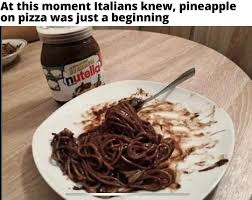

Nutella Spagetti
my spagetti longer than your spagetti-chef bangdu

Da Plot:
"Nutella Spaghetti: For when you want to personally offend every Italian nonna in a 50-mile radius. Take perfectly innocent spaghetti, drown it in a thick, gooey layer of Nutella, and call it 'fusion cuisine.' It’s the culinary equivalent of putting pineapple on pizza—except worse, because even the pineapple lobby wouldn’t claim this monstrosity. Serve it hot, watch the chocolate ooze into a sad, sticky mess, and enjoy the sound of distant Italian cursing echoing through the ether."
Ingredients to steal from yo mom:
- 1 lb of spaghetti: Preferably blessed by an Italian priest.
- 1 jar of Nutella: The whole thing.
- 2 tbsp tears of an Italian nonna: Harvested fresh as she watches you commit this culinary sin—extra salty for flavor.
- A drizzle of olive oil: Because you’ll need something to bribe the ancestors for forgiveness later.
- 1 handful of parmesan regret: Grated finely over the top, because even the cheese knows this is wrong.
How to birth this abomination:
- Cook spaghetti
- Mix in Nutella and tears
- Scream 'Mamma ohh!!!' while stirring
- Pour some oil , and sprinkle with regret
- Hide from anyone with a rolling pin
Papi!!Take me back Home!!